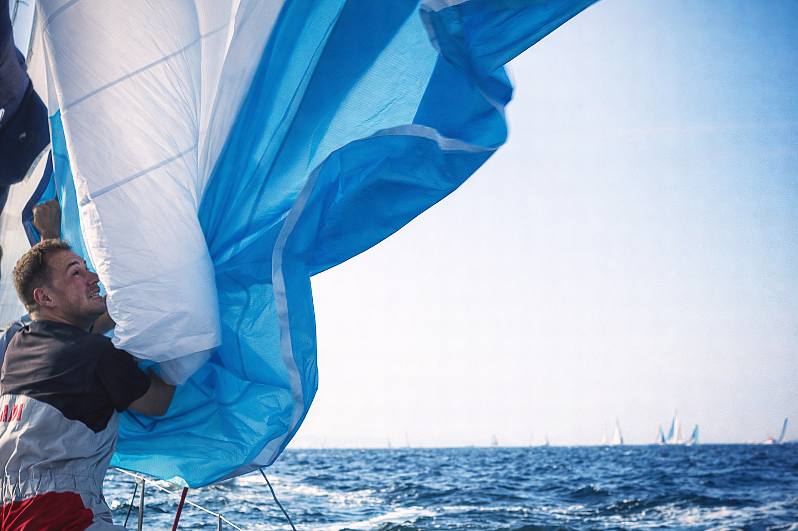
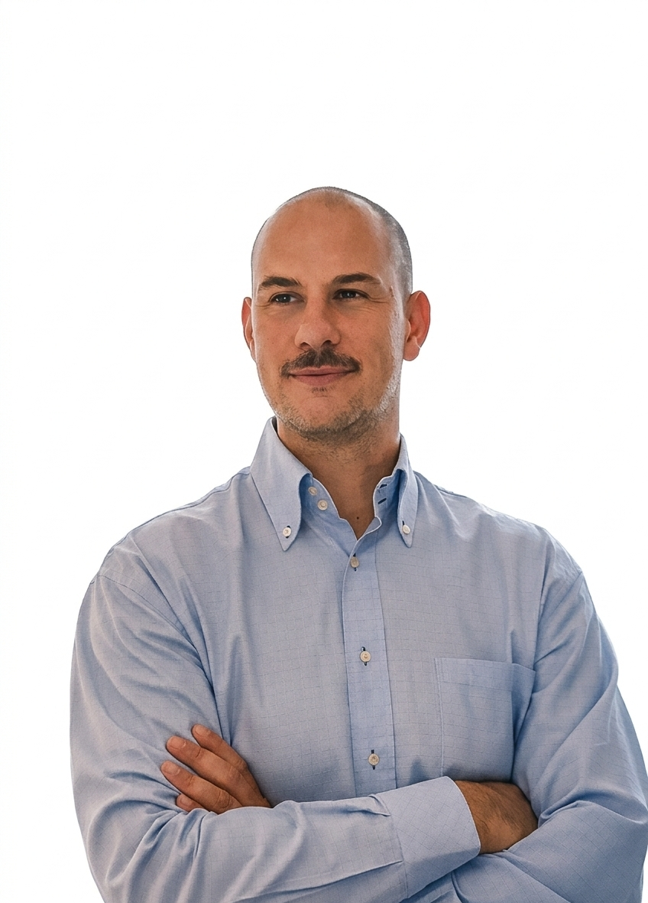

Velista & Ingegnere Navale
Oltre il Mediterraneo: un percorso verso l’Atlantico
Scopri iL progetto

Il mio percorso nella vela nasce dal mare, prima ancora che dalla competizione.
Negli anni ho navigato a lungo nel Mediterraneo, affiancando all’esperienza personale un percorso formativo
che mi ha portato a diventare Istruttore di Vela FIV(Yacht e Monotipo). L’insegnamento mi ha permesso di
sviluppare non solo competenze tecniche, ma anche capacità di gestione, pianificazione e responsabilità
decisionale.
Parallelamente, sto completando la Laurea Magistrale in Ingegneria Navale, integrando l’esperienza pratica con
una preparazione tecnica strutturata.
Nel 2019 ho intrapreso un progetto personale significativo: il recupero e il refit completo di una barca da
regata che aveva precedentemente disalberato.
L’imbarcazione è stata ricostruita e riportata in piena
operatività attraverso un lavoro integrale di ripristino e ottimizzazione tecnica.
In contemporanea al refit, ho partecipato a regate di circolo e competizioni nazionali su altre imbarcazioni,
utilizzando quell’esperienza come laboratorio di osservazione: analizzando soluzioni, assetti e configurazioni
per poi trasferire e adattare quanto appreso alla mia barca.
Oggi, a 37 anni, porto nel progetto Mini 6.50 una combinazione di maturità, competenza tecnica e
consapevolezza operativa che rappresenta la base per affrontare una sfida oceanica con metodo e progressione.
Nasce dalla volontà di costruire, nell’arco di tre anni, un percorso tecnico e umano che conduca alla partecipazione all’edizione 2029 della Mini Transat 6.50: una regata oceanica in solitario, la più formativa e tecnicamente complessa.
Integra competenze ingegneristiche e preparazione sportiva, trasformando la barca Mini 6.50 in una vera piattaforma di sviluppo tecnico, analisi delle performance e sperimentazione applicata.
E'pensato come una partnership strategica triennale, in cui sport, innovazione e comunicazione si integrano in modo strutturato, con obiettivi chiari, budget trasparente e attività pianificate.
Ogni progetto nasce da un'idea, parliamone.